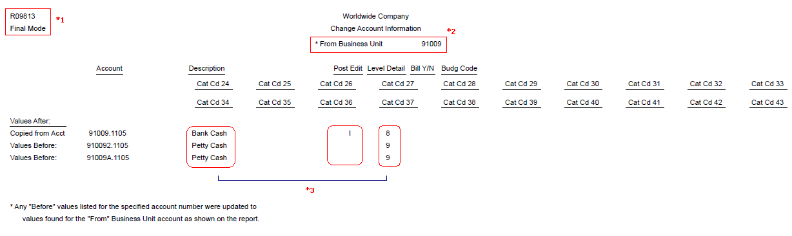

After making changes to information on an account in a particular business unit such as Account Description (data dictionary item DL01), Posting Edit Code (data dictionary item PEC), or Level of Detail (data dictionary item LDA), it may be desirable to copy this account information into equivalent accounts across several business units. This process can be completed by either changing the account information in the Account Master table (F0901) individually using the Account Master (P0901) or for companies globally using the Change Account Information (R09813) Global Update to process several accounts throughout multiple business units at once.
NOTE: This global update report cannot be used to update either the Business Unit or the Object.Subsidiary field. To update these fields, you can run Change Business Unit (P09812), Changing Accounts By Object Account (P09803), Changing Accounts By Subsidiary (P09805), and Update BU.Obj.Sub to Journal Entry Program (R09806). For more information on the same, please refer to Global Updates for Organizational and Account Structure Revisions.
The Change Account Information program (R09813) can be run in Proof or Final mode.
Scope
This document provides an overview of the functionality of the Change Account Information Global Update (R09813), the setup and output of this report and how it can be used for account master changes.
Details
Proof Mode
When you select Proof mode, the system prints a report and does not update any information.
Final Mode
When this program is run in Final mode, the system updates selected fields for all similar accounts in the Account Master (F0901). Set the Account Information processing option to update these fields:
Account Description (DL01)
Alternate Description
Posting Edit Code (PEC)
Level of Detail (LDA)
Billable (BILL)
Budget Pattern Code (BPC)
Unit of Measure (UM)
Alternate Object.Subsidiary (OBJA.SUBA)
Account Category Codes 1-43) (R001-R043)
Model Account (FMOD)
NOTE: The system updates all of the fields that you select in the processing option. To exclude fields such as Category Codes 21-23 that might represent your statutory chart of accounts, verify that the fields are not selected in the processing options. You should restrict access to these processing options so that your statutory chart of accounts is not inadvertently changed.
When updating for example Account Category Code for Model Accounts the Processing Option for Model Account on the Account Info tab must be set to 1 besides the Account Category Code setting.
NOTE: For Accounts having Account Ledger transactions (F0911), the associated Post Edit Code can not be changed to 'N'. The following error will display on the report: Invalid Change. Accounts with balances in the F0911 table cannot have Posting Edit Code of "N".
Setup
Processing Options
Global Update Tab
1. From Business Unit
Enter a valid business unit number from Business Unit Master (F0006) table for which account information will be copied.
Change Account Information (R09813) copies values from accounts within this business unit to equivalent accounts in other business units.
You must enter a value for this processing option.
2. Processing Mode
Enter '2' to not generate a report but update the Account Master (F0901) table.
Enter '1' to generate a report and update the Account Master (F0901) table.
Default of blank will generate a report but does not update the Account Master (F0901) table.
Account Info Tab
1. Account Information Fields
The Account Info tab includes all non-structure-related fields in the Account Master (F0901). Any field flagged with a '1' will be included as part of the changes. Fields that are not flagged will be unaffected by the update.
ACA Tab
1. Advanced Cost Accounting fields
The ACA Tab includes all the Advanced Cost Accounting fields - Cost Object Edit Code 1-4 and Item Edit Code to be included in the Global Update. Any field flagged with a '1' will be included as part of the changes. Fields that are not flagged will be unaffected by the update.
Alt Desc Tab
1. Update Alternative Descriptions
Enter '1' to update account descriptions in the Account Master - Alternate Description table (F0901D) that have been translated into alternate languages.
The system copies alternate language account descriptions that correspond to language preferences in the Account Master - Alternate Description (F0901D) table for accounts within the business unit specified in the From Business Unit processing option to the Account Master - Alternate Description (F0901D) table for equivalent accounts in other business units.
Default of blank will not update alternate language account descriptions.
2. Specific Alternate Description language code
Specify a language code for the system to use when copying the alternate language account descriptions to the F0901D table.
To update a specific language code, enter a code from UDC table 01/LP (Language) in this processing option and enter 1 in the Update Alternative Descriptions processing option.
To update all language codes, leave this processing option blank and enter 1 in the Update Alternative Description processing option.
3. Include Alternative Descriptions on the report
Enter '1' to print details for the alternate language account descriptions that were copied to the Account Master - Alternate Description (F0901D) table on the report.
Default of blank will not print the details for the alternate language account descriptions.
Data Selection
It is recommended to run the R09813 report only for the business units you want to change.
Reviewing the Report

*1 On top left corner it displays, whether the report is run in final or proof mode.
*2 It displays the business unit number from Business Unit Master (F0006) table for which account information will be copied.
*3 The above example shows change in following fields:
Account Description - Petty Cash to Bank Cash
Posting Edit Code - Blank to 'I'
Level of Detail - 9 to 8
Please note that in this example, the Change Account Information (R09813) updates all accounts with object 1105 for the above mentioned fields. All accounts with Object 1105 and Subsidiaries are not be affected. A separate version specifying subsidiary in the data selection would need to be created to change those objects with subsidiaries.